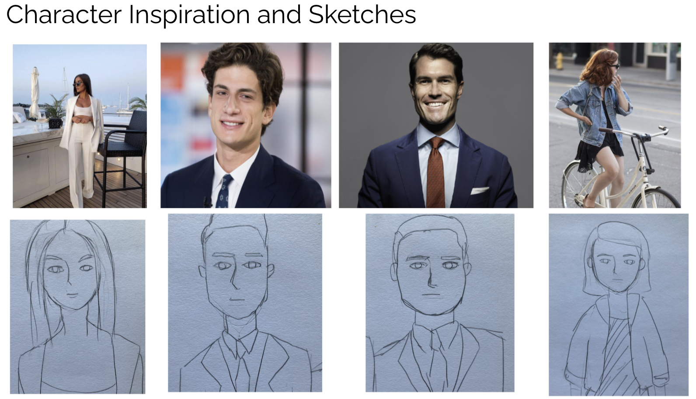
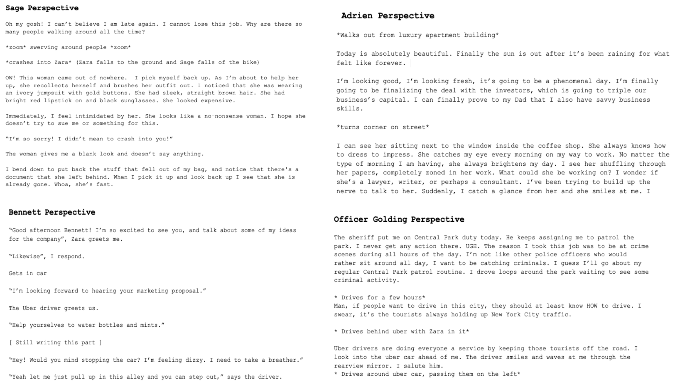
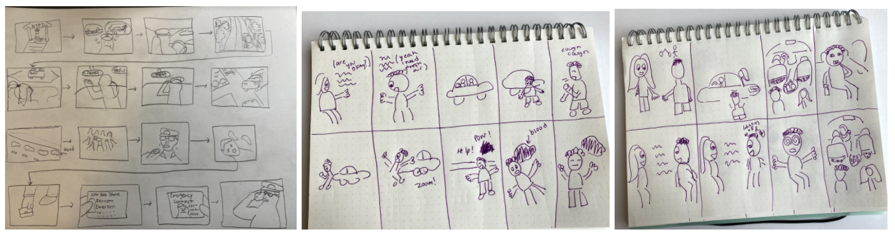
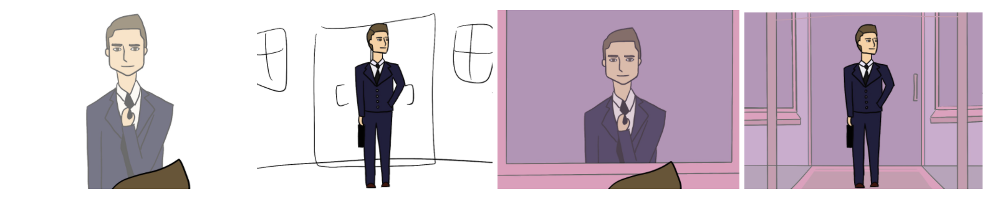
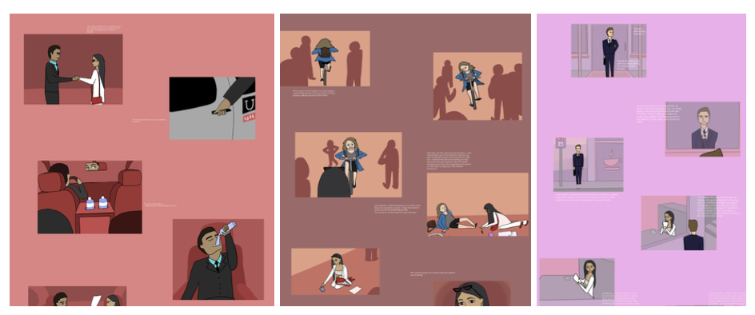
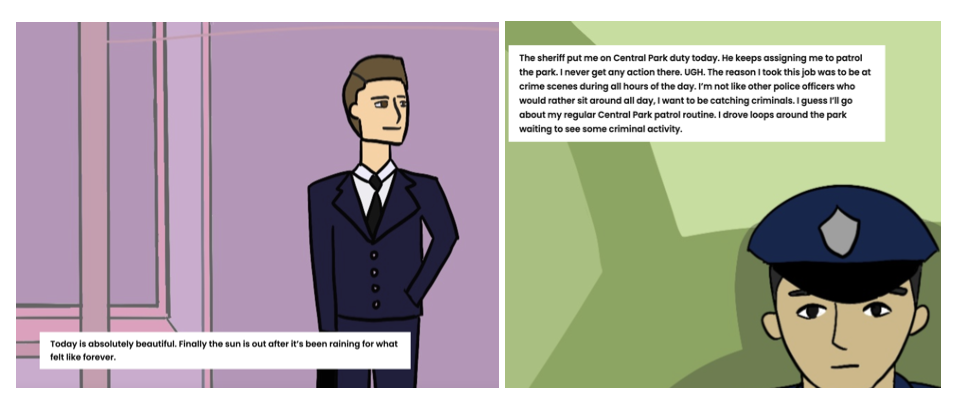

Project
A Day in the Life is a web-based interactive novel that revolves around the perspective of four different people's experience of a seemingly ordinary day. Link
Context
This was my semester capstone group project for Creative Computing of Spring 2021. The storyline of this narrative was created based on the semester's theme: Together Apart/Time Space. Indirect parallel connections were created in the storylines to emphasize the central ideas of the theme in a creative context. The overarching storyline and individual perspectives were all thoughtfully crafted in order to create a cohesive yet intriguing narrative.
Design Process
Brainstorming: All the characters in the story were thoughtfully developed from the selection of their names to their personalities and context of their world.
Writing: A major part of the web-based novel was the writing process, and that took a lot of detail, creativity, and imagination to produce. A snippet of each perspective of the manuscript can be seen above.
Storyboarding: Once the scripts were finalized, low-fidelty storyboards were developed for every scenario in each perspectives.
Sketching: Through iterative sketching, high quality illustrations were developed. Using Adobe Photoshop, novel and original artwork were produced that vividly illustrated the storyline.
Wireframing: We used Figma to create wireframes of how we wanted the images and texts to be placed on the website. Visualizing the placements of the texts and images lead to more iterative ideas on the layout. To create a more immersive experience the final layout of the webpages were changed so that the images were shown full screen. Text boxes were also added to increase readability.
Evaluation: Sample webpages of the final layout can be seen above. JavaScript, HTML, and CSS were used to build the webiste. The website technologicallys support all of the artistic creations (images and texts) with no lags and glitches. Heuristic evaluations were conducted and found to uphold majority of usability principles.